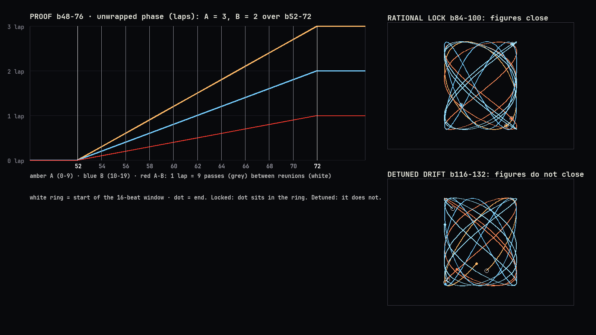

SCION 06 · Whitney, harmonic motion · ET TU, BRUTE? · BOXBACK · track 14
THE UNIVERSAL BOXBACK
Twenty corrugated boxes form one oscillator bank. The house is shown finished first and then made backward, from its end form down to its first step (Aristotle). At the climax the architect's direction fails against the builder's report, and the revised direction re-phases the whole house (Plato).
▶ 3:2 proof clip (16 s)Status
Current revision
r6: motion-shape pass after critic round 5. All 40 invariants pass. 173.5 s, 1280×720, 24 fps, 130.03 BPM grid.
Decisive critic verdict
Round 5: proof PASS · film inconclusive (leaning fail)
Round 5 found conditions 3–6 met; only the motion shape was left. r6 makes the 3:2 accumulation the most kinetic passage and turns the release into a monotone decay, both measured on the rendered mp4. The final check is pending. (Rounds 1–4: proof pass, film reference stronger.)
Next blocking failure
An independent check of r5. Known residuals: brief crossings inside the free oscillator bank (b84–144); box numbers are 2× larger than r1, short of 3×.
Accepted checkpoint
Proof mechanics accepted in critic round 1 (3:2 measured). Every frame is reproducible from
src/render.py.Score
| beats | passage |
|---|---|
| 0–16 | Title: red letter-spaced caps over a motion-blurred plate (slate style) |
| 16–32 | The end form: the finished house as a constellation of corner points |
| 32–48 | Backward: top row first, each box materialises and rises out; then they drop into the ring, lowest slot first |
| 48–76 | Proof: A laps 3, B laps 2 over b52–72. The rings separate, A passes B nine times (one pass every 2 beats), then they approach and reunite |
| 77–80 | The song stops: the field dims, the glow goes off, STOP |
| 80–160 | Oscillator bank: LOCK star at b96, UNLOCK at b112 (detuned drift), then capture as points onto the locked ring and the RE-LOCK star at b148 |
| 160–238 | Making starts at the first step: one box lands every 4 beats, foundation first |
| 238–264 | The architect directs; the beam lands on the roof and is refused; the architect re-plans the whole house step by step (lift the roof, open the door, beam in, new roof). The house is F at b264 |
| 264–304 | The house breathes in a 3:2 micro-orbit |
| 304–324 | Breakdown: the faces fade, and the house reads from its corner points alone |
| 324–368 | 3:2 on the wide ellipses, the field lifts away, then the house rains back row by row; the last box lands on b368. The faces then fade back to the constellation |
Measured invariants (r6)
These are computed from the closed-form trajectories, except C4, D3, E1, H1b, M1, M2, K1 and K2, which use rendered pixels, text boxes or the mp4.
| test | result | value |
|---|---|---|
| P1 proof phase ratio A:B = 3:2 | PASS | {"laps_A": 3.0, "laps_B": 2.0} |
| P2 reunion at b52 | PASS | {"max_angle_err_rad": 0.0} |
| P2 reunion at b72 | PASS | {"max_angle_err_rad": 2.220446049250313e-15} |
| P3 nine interference passes on even beats | PASS | {"max_angle_err_rad": 2.220446049250313e-15} |
| P4 proof non-pair separation >= 60 px | PASS | {"min_px": 66.56} |
| C1a release 164-169.85 s: max box overlap <= 10 % | PASS | {"max_overlap": 0.0, "pair": null, "frame": null} |
| C1b the house rains back row by row (each row lands before the next starts) | PASS | {"rows": [[356.95, 356.15, 356.55, 357.35], [359.4, 358.6, 359.0, 359.8], [361.45, 361.85, 361.05], [363.9, 363.1, 363.5, 364.3], [365.95, 365.55, 366.35], [367.6, 368.0]]} |
| C1c last box lands ON the b368 frame (nearest frame), not after | PASS | {"frame": 4076, "err_on_px": 0.0, "err_prev_frame_px": 23.2} |
| C2 every row changed (116.5 s vs 122.5 s) | PASS | {"at_116_5": {"1": [505, 595, 685, 775], "2": [505, 595, 685, 775], "3": [460, 550, 640, 730, 820], "4": [460, 550, 640, 730, 820], "5": [837]}, "at_122_5": {"1": [460, 550, 730, 820], "2": [460, 550, 730, 820], "3": [460, 640, 820], "5": [ |
| C2b after the re-phase the house is the end form F | PASS | {} |
| C2c Plato section: max box overlap <= 10 % | PASS | {"max_overlap": 0.0, "pair": null, "frame": null} |
| C3 marker A passes 12 o'clock 3x, marker B 2x (b52-72) | PASS | {"A": 3, "B": 2} |
| C3b per-beat sampling can count it (A moves 54 deg per beat < 180) | PASS | {"A_deg_per_beat": [270, 324, 18, 72, 126, 180]} |
| C4 the stop shows on the b77 frame (pixel change >> hold) | PASS | {"frame": 854, "mean_abs_diff_stop": 9.49, "mean_abs_diff_hold": 0.0} |
| C6 dissolve 16.3-18.7 s: max box overlap <= 10 % | PASS | {"max_overlap": 0.0, "pair": null, "frame": null} |
| C6 re-lock 70.0-71.5 s: max box overlap <= 10 % | PASS | {"max_overlap": 0.0, "pair": null, "frame": null} |
| C6b lock / unlock / re-lock stars on whole beats | PASS | {"beats": {"lock": 96.0, "unlock": 112.0, "relock": 148.0}} |
| B1 final house == opening end form (eps 0.5 px) | PASS | {"max_err_px": 0.0} |
| B2 both bookends are the constellation (faces off, points on) | PASS | {} |
| B3 rational lock closes in 16 beats; detuned drift does not | PASS | {"lock_err_px": 1.3642420526593924e-12, "drift_err_px": 373.3} |
| B4 beam refused by row 3 until the house is re-planned | PASS | {} |
| B5 making starts at the first step (lower rows land first) | PASS | {} |
| D1 122-140 s: >=8 boxes move >=15 px on >=50 % of beats | PASS | {"fraction_of_beats": 0.842, "boxes_moving_per_beat": [0, 0, 0, 10, 10, 10, 10, 10, 10, 10, 10, 10, 10, 10, 10, 10, 10, 10, 10, 10, 10, 10, 10, 10, 10, 10, 10, 10, 10, 10, 10, 10, 10, 10, 10, 0, 0, 0]} |
| D2 accumulation phase relation odd:even rows = 3:2 | PASS | {"zero_crossings_row1": 54, "zero_crossings_row2": 36} |
| D3 accumulation coverage exceeds every earlier section | PASS | {"accumulation": 0.1857, "best_earlier": "plato", "best_earlier_value": 0.1124} |
| D4 house slots return exactly by 140 s | PASS | {"max_err_px": 0.0} |
| E1 all text within x = 40..1240 | PASS | {"texts_checked": 1454, "unique": 49, "violations": []} |
| E2 ARCH/BLDR tags and A×3/B×2 legend >= 12 px tall at 360 px | PASS | {"height_at_360_px": 12.9} |
| F1 151.5-160 s: all content y <= 700 | PASS | {"max_y_px": 657.4} |
| G1 149.75-150.25 s: max box overlap <= 10 % | PASS | {"max_overlap": 0.0, "pair": null, "frame": null} |
| H1a making 73-110 s: max box overlap <= 10 % | PASS | {"max_overlap": 0.0, "at": null} |
| H1b making 73-110 s: no box enters a label / card area | PASS | {"hits": []} |
| H1c making 73-110 s: every box >= 8 px from the frame edges | PASS | {"min_edge_px": 10.0} |
| H2 film-wide: boxes >= 8 px inside the side / bottom edges (top too, except scripted exits) | PASS | {"min_edge_px": 10.0, "at": [14, 81.25]} |
| H3 beam numeral and footer >= 12 px tall at 360 px | PASS | {"beam_7_px": 12.7, "footer_px": 14.1} |
| M1 every 4 s window after 140 s moves less than the 132-136 s peak | PASS | {"peak_132_136": 14.163, "windows": {"140-144": 0.138, "144-148": 0.0, "148-152": 2.927, "152-156": 6.32, "156-160": 4.679, "160-164": 1.381, "164-168": 1.794, "168-172": 1.222}} |
| M2 rendered pixels: no lit pixel within 8 px of an edge after 7.5 s (every 4th frame) | PASS | {"frames_checked": 981, "hits": []} |
| M3 conveyor loop stays >= 8 px clear of the stack | PASS | {"min_gap_px": 11.5} |
| K1 (mp4) every 4 s window outside 122-140 s is below the accumulation peak | PASS | {"accumulation_peak": 14.535, "max_outside": 11.679, "at": "28-32", "windows_4s": [4.32, 3.844, 0.0, 0.372, 1.594, 0.653, 11.41, 11.679, 3.556, 3.604, 3.952, 4.446, 4.747, 4.543, 4.567, 4.608, 3.722, 2.885, 2.392, 4.503, 4.06, 3.554, 2.972, |
| K2 (mp4) release 151-161 s: strictly decreasing 1 s motion, last <= 50 % of the first | PASS | {"windows_1s_151_161": [8.562, 7.67, 6.782, 5.852, 5.535, 5.062, 4.79, 4.565, 4.202, 3.482, 1.447]} |
Motion per 4 s window (rendered mp4, greyscale mean |Δframe|)
| window | motion |
|---|---|
| 0–4 s | 4.32 |
| 4–8 s | 3.844 |
| 8–12 s | 0.0 |
| 12–16 s | 0.372 |
| 16–20 s | 1.594 |
| 20–24 s | 0.653 |
| 24–28 s | 11.41 |
| 28–32 s | 11.679 |
| 32–36 s | 3.556 |
| 36–40 s | 3.604 |
| 40–44 s | 3.952 |
| 44–48 s | 4.446 |
| 48–52 s | 4.747 |
| 52–56 s | 4.543 |
| 56–60 s | 4.567 |
| 60–64 s | 4.608 |
| 64–68 s | 3.722 |
| 68–72 s | 2.885 |
| 72–76 s | 2.392 |
| 76–80 s | 4.503 |
| 80–84 s | 4.06 |
| 84–88 s | 3.554 |
| 88–92 s | 2.972 |
| 92–96 s | 2.497 |
| 96–100 s | 2.148 |
| 100–104 s | 1.502 |
| 104–108 s | 1.103 |
| 108–112 s | 0.625 |
| 112–116 s | 0.289 |
| 116–120 s | 1.704 |
| 120–124 s | 1.718 |
| 124–128 s | 7.639 |
| 128–132 s | 10.061 |
| 132–136 s | 14.535 |
| 136–140 s | 8.671 |
| 140–144 s | 0.202 |
| 144–148 s | 0.0 |
| 148–152 s | 3.209 |
| 152–156 s | 6.46 |
| 156–160 s | 4.655 |
| 160–164 s | 1.396 |
| 164–168 s | 1.929 |
| 168–172 s | 1.037 |
Coverage per section (lit pixels, max channel > 40)
| section | mean | max |
|---|---|---|
| end form | 3.5% | 3.5% |
| backward | 4.8% | 10.0% |
| proof | 10.7% | 12.7% |
| lock | 3.8% | 8.8% |
| drift | 6.9% | 10.3% |
| re-lock | 4.0% | 6.6% |
| making | 8.5% | 10.0% |
| plato | 11.2% | 12.8% |
| accumulation | 18.6% | 30.4% |
| points | 4.6% | 11.2% |
| release | 8.1% | 9.7% |
| rain | 5.3% | 9.4% |
Critic round 5 → r6 repairs
| # | finding | repair |
|---|---|---|
| 1 | The accumulation (7.05) moved less than the proof ring (10.2) | The proof is untouched. The accumulation rows now cycle 3 and 2 times per 4 beats (was per 8), the slide amplitude is 340 px, and two bright echoes at a 0.5-beat lag are drawn behind the faces. The 132–136 s window is 14.535 against a maximum of 11.679 anywhere else (proof, 28–32 s). The return at b302 is still exact. |
| 2 | Release flat, then a sudden stop | The ring's phase decays as exp(−t/9 beats) from b325 and runs on into the fade. 1 s windows from 151 to 161 s: 8.562, 7.67, 6.782, 5.852, 5.535, 5.062, 4.79, 4.565, 4.202, 3.482, 1.447, strictly decreasing, with the last at 17% of the first. |
| 3 | Opening is not the constellation | The end form's corner points fade in under the title from b1. |
Critic round 4 → r5 repairs
| # | finding | repair |
|---|---|---|
| 1 | Release outshines the 3:2 peak (motion 20.1 vs 11.0) | The release ring keeps 3:2 but runs at 0.75 : 0.5 laps on smaller ellipses with no trails, then decays to a stop and fades in place. Every 4 s window after 140 s is at most 6.5 against the peak's 7.9 (test M1). |
| 2 | Content touching the top edge | Nothing enters or leaves through the frame any more. The un-making rises to the safe top and fades; the gather and the rain fade in at the safe top. No lit pixel within 8 px of an edge after 7.5 s, measured on 981 rendered frames (test M2). |
| 3 | Flashes covering labels; constellation over faces; beam on box 19 | Landing flashes are outlines outside the box. Boxes fade out before the points come up, and points dim before the boxes return. The refused beam stops 22 px short of the roof. |
| 4 | Conveyor not as described | The description is corrected: it is an elliptical loop around the stack (570×262 on y 420), passing below row 1 and above the roof, and reading as an arc once most boxes have landed. Measured clearance from the stack: at least 11.5 px (test M3). |
Critic round 3 → r4 repairs
| # | finding | repair |
|---|---|---|
| 1 | Making (73–110 s) uncontrolled: overlaps, boxes crossing the stack, boxes over FIRST STEP, edge clipping | One conveyor lane (an ellipse 570×262 on y 420) outside the stack footprint and inside the safe area, with 20 slots and one lap per 80 beats. Each box leaves from the top of the lane on its departure beat, crosses a free band at y 240, and drops straight down into its slot. Boxes ride upright, and the ring-to-lane change is made as points. Sampled every 0.25 s: max overlap 0.000, no label hits, min edge 10.0 px. |
| 2 | BEAM 7 tag and footer 3–4 px tall | The beam is a full-height box with a face-filling "7" (12.7 px at 360). The footer is now "BOXBACK · 14/18" at 66 px (14.1 px at 360). |
| 3 | Ring 6 px from the sides; black at 163–164 s | The release rings are narrowed: film-wide, every box is at least 10 px inside the sides and bottom. The house-to-come stays as faint dots while the field is away. |
Critic round 2 → r3 repairs
| # | finding | repair |
|---|---|---|
| 1 | 122–140 s stall; no sparse→dense arc | 3:2 ACCUMULATION: rows slide as rigid cards, odd rows at 3 and even rows at 2 cycles per 8 beats, under an accumulating envelope (peak b292, closed b302), with filled echo copies. On 79% of beats at least 8 boxes move at least 15 px. Coverage is 15.5% mean (23.6% peak) against at most 10.8% earlier. The slots are exact by 140 s. |
| 2 | Card wider than the frame | Every text item is measured and shrunk to fit x = 40–1240. 1454 drawn texts were checked (49 unique), with 0 violations. |
| 3 | Ring off the bottom | The release rings are 600×280 and 500×220, centred on y 380. Max content y is 696.9. |
| 4 | Beam collision at 150 s | The house opens as points: it collapses, travels and regrows on the ring. Overlap is 0.000. |
| 5 | Tags and legend 4 px tall | Now 60 px, which is 12.9 px tall at 360 px width. |
Critic round 1 → r2 repairs
| # | finding | repair |
|---|---|---|
| 1 | Release pile-up, 164–169.85 s | The field lifts away, then the house rains back row by row with vertical drops (foundation first). Max overlap 0.000; the last box lands on frame 4076 = b368. |
| 2 | Plato reads as a ripple | Plan P0 is now a doorless block with a flat roof. Refused at the roof, the architect directs LIFT ROOF · OPEN DOOR → BEAM 7 → ROW 3 → ROOF → NEW PLAN, and every row changes. The propagation wave is kept. |
| 3 | 3:2 not countable | Box 0 is red (A), box 10 is yellow (B), with a 12-o'clock tick and an A×3 / B×2 legend. |
| 4 | Dead freeze at b77 | On the b77 frame the field dims, the glow goes off, and STOP replaces 3:2. Pixel change 8.1 vs 0.0. |
| 5 | Opening not a constellation; early title cuts | The end form opens and closes as corner points. The plate jump-cuts and words land on beat frames. |
| 6 | Clumps; no phase marker | The un-making is LIFO vertical rises and the gather fills lowest slots first (0.000 overlap). The re-lock captures the boxes as points onto the locked ring (0.000). LOCK / UNLOCK / RE-LOCK stars land on b96, b112 and b148. |
| 7 | Phone text; late flashes | Section labels 66 px white (3×), cards 60 px on solid black, box numbers fill the face (2×). Flashes land on the nearest frame. |
Phase visualiser

Artifacts
- invariants.json · test_invariants.py
- bank_phases.json: the constrained phase search (seed 2026, 4000 iterations)
- Source ledger · SFX cue sheet (tuned bells in A♭ pentatonic on the event list)
- Production record · Source (
film.pyparametric score,score.py,render.py) - Song page